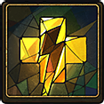

Masteries
 Valiant Return
Valiant Return
If Sir Gilman and all his allies are banished, he shall instantly return.
 Quick Draw
Quick Draw
After using his Slash, Sir Gilman can use it again to instantly return to his previous position.

Vigorous Slash
After using his Slash, Sir Gilman instantly recovers all his Stamina.
Statistics
 Glory:
Glory: 15
Rank: Faint
This attribute affects damage dealt to a Pyre. Quickness:
Quickness: 25 (7.6m/s)
Rank: Electric
This attribute affects movement speed. Presence:
Presence: 5 (1.5m)
Rank: Thin
This attribute affects Aura size. Hope:
Hope: 17 (8.3s)
Rank: Determined
This attribute affects duration of banishment.Rites Powers
 Slash
Slash
Detonates his Aura-trail and snaps back to its end.
 Jump
Jump
Leaps high enough to evade adversaries’ Auras.
 Slither
Slither
Surges forward at a high speed.